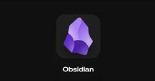

npaka
https://note.com/npaka
プログラマー。iPhone / Android / Unity / ROS / AI / AR / VR / RasPi / ロボット / ガジェット。年2冊ペースで技術書を執筆。アニソン / カラオケ / ギター / 猫 twitter : @npaka123
フィード

RDK X5 1台でヒューマノイドはどう動く？ RPOの基板の役割とつながり
npaka
RDK X5で計算した指令が23個の関節モーターに届くまでを、各基板の役割と接続を写真で確かめながらたどります。続きをみる
4時間前

SADL 入門 - JEPAの学習を安定させロボット制御の成功率を高める
npaka
JEPAの基本から、SADLが表現崩壊を抑え、LeWMとINTACTの制御成功率をどれだけ高めたかを紹介します。続きをみる
15時間前


Programmatic Video 入門 - Claude Code・Codexによる動画制作の仕組み
npaka
Claude Code・Codexによる動画制作の仕組みについてまとめました。続きをみる
2日前


RoboParty RPO・RP1のダンス学習の仕組み - ヒューマノイドはどうやって踊りを覚えるのか
npaka
「RoboParty」の「RPO」「RP1」のダンス学習の仕組みをまとめました。続きをみる
5日前

Obsidian 入門 (2) - Copilot for Obsidian の使い方 1
1
npaka
「Copilot for Obsidian」にCodexを設定し、ノートの要約・下書き・推敲まで試します。続きをみる
6日前


RoboParty RPO・RP1のテレオペの仕組み - ゲームコントローラとVRによる遠隔操作
npaka
「RoboParty」の「RPO」と「RP1」のテレオペの仕組みをまとめました。続きをみる
10日前
Google Colab API ・ MCP Endpoint の概要 - 機能・使い方・Colab CLIとの違い
npaka
「Google Colab API」「MCP Endpoint」の概要をまとめました。続きをみる
10日前
Qwen3.8-27B-pi-adapted の概要 - 強化学習でコーディング性能を大幅に向上させるHarness Adapters
npaka
「Qwen3.8-27B-pi-adapted」の概要をまとめました。続きをみる
10日前
Gemini 4 Hydrogen と Antigravity Robotics Plugin の概要 - AIエージェントによるロボット開発の自動化
npaka
「Gemini 4 Hydrogen」と「Antigravity Robotics Plugin」の概要をまとめました。続きをみる
10日前
RoboParty RPO・RP1のマニピュレーション学習の仕組み - ヒューマノイドはどうやって物をつかみ、操作できるようになるのか
npaka
「RoboParty」の「RPO」と「RP1」のマニピュレーション学習の仕組みをまとめました。続きをみる
11日前
RoboParty RPO・RP1の歩行学習の仕組み - 強化学習でヒューマノイドはどうやって歩けるようになるのか
npaka
「RoboParty」の「RPO」と「RP1」の歩行学習の仕組みをまとめました。続きをみる
11日前